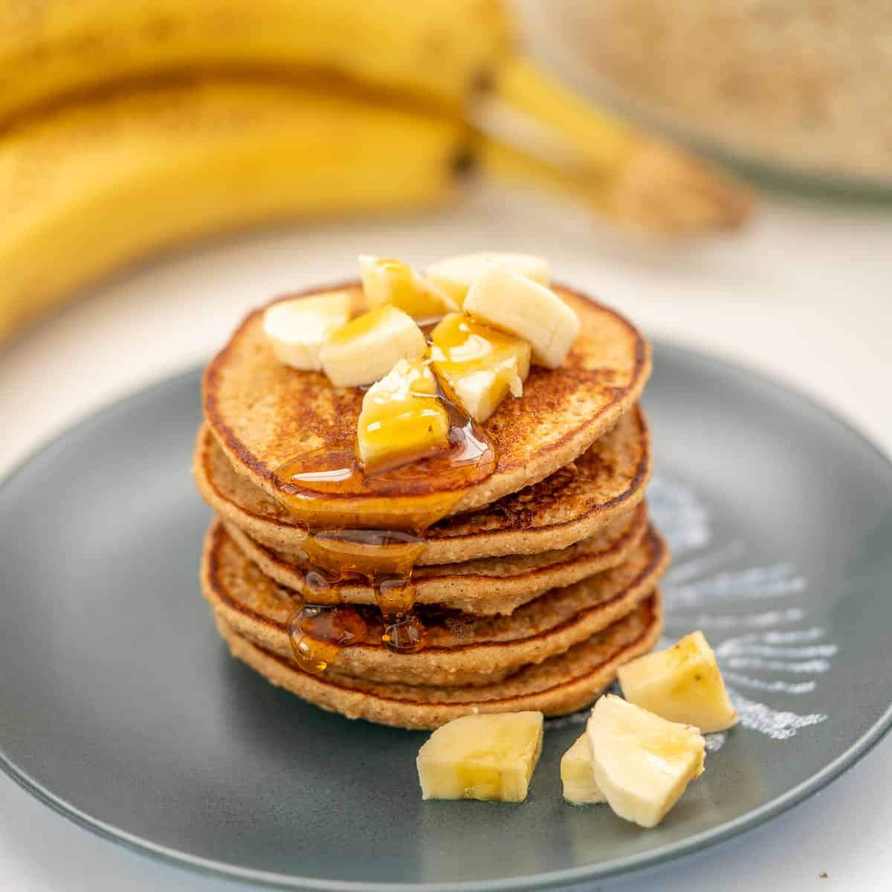

Home
Banana Oat Pancakes

A healthy and hearty breakfast option, perfect for a weekend morning.
Banana Oat Pancakes are a wholesome and delicious
breakfast option made with ripe bananas, oats, and eggs. These pancakes
are naturally sweet, fluffy, and packed with fiber, making them a healthy
start to your day. Perfect for a quick and easy breakfast, they can be
topped with fresh fruit, yogurt, or a drizzle of maple syrup for added
flavor.
Ingredients
- 1 ripe banana
- 1/2 cup rolled oats
- 2 eggs
- 1/4 tsp cinnamon
- 1/2 tsp baking powder
- 1/4 tsp vanilla extract
- 1 tbsp honey (optional)
Steps
-
Blend Ingredients: In a blender, combine banana, oats,
eggs, cinnamon, baking powder, vanilla extract, and honey. Blend until
smooth.
-
Cook Pancakes: Heat a non-stick pan over medium heat.
Pour small circles of batter and cook for 2-3 minutes on each side until
golden brown.
-
Serve: Top with fresh fruit, yogurt, or maple syrup for
a delicious start to your day.